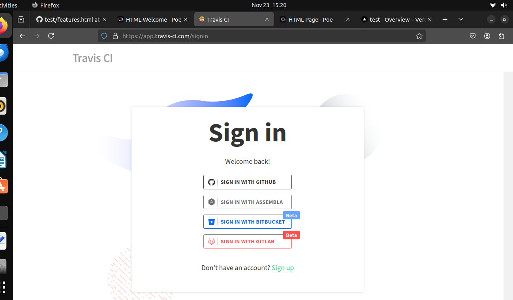
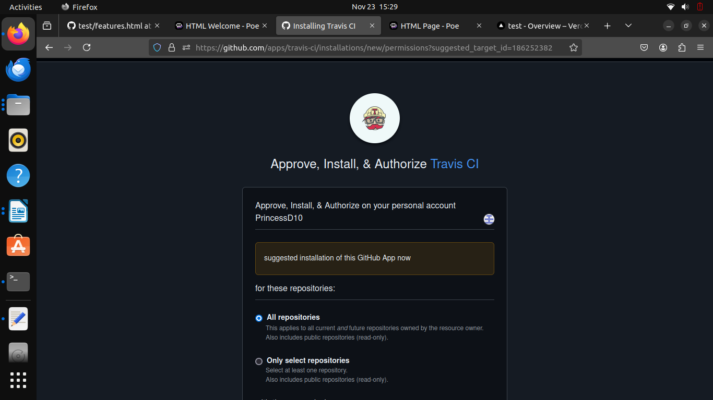
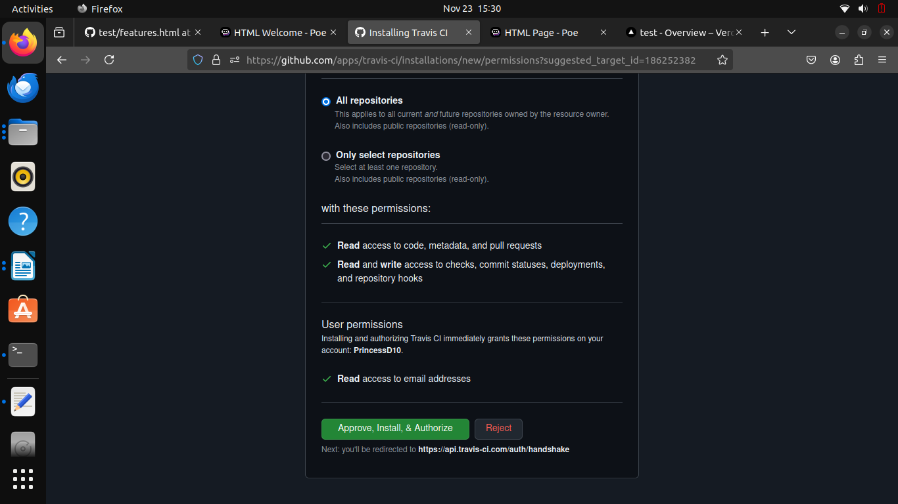
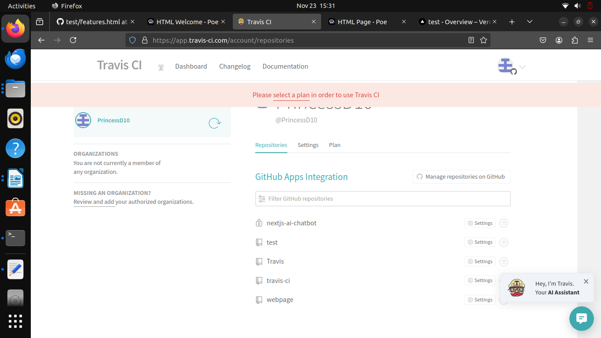
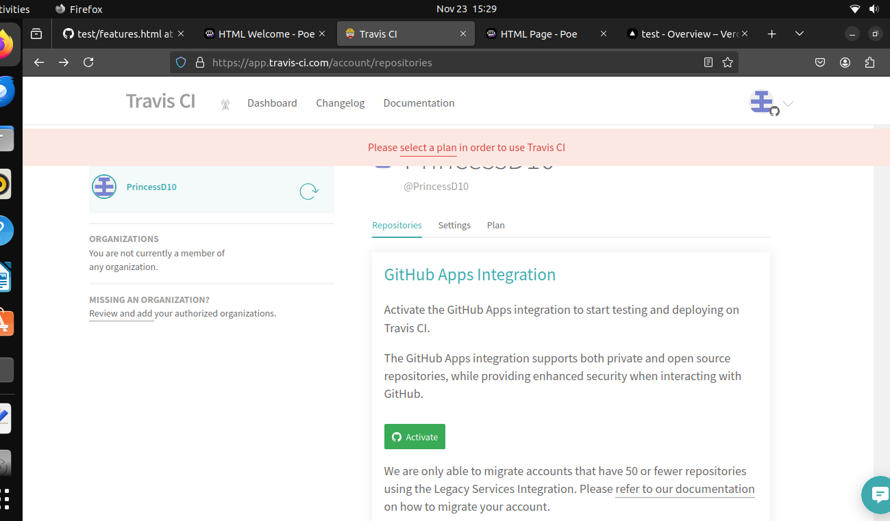
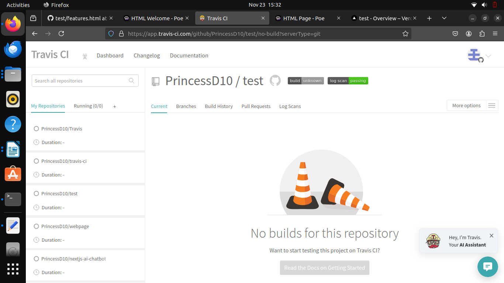
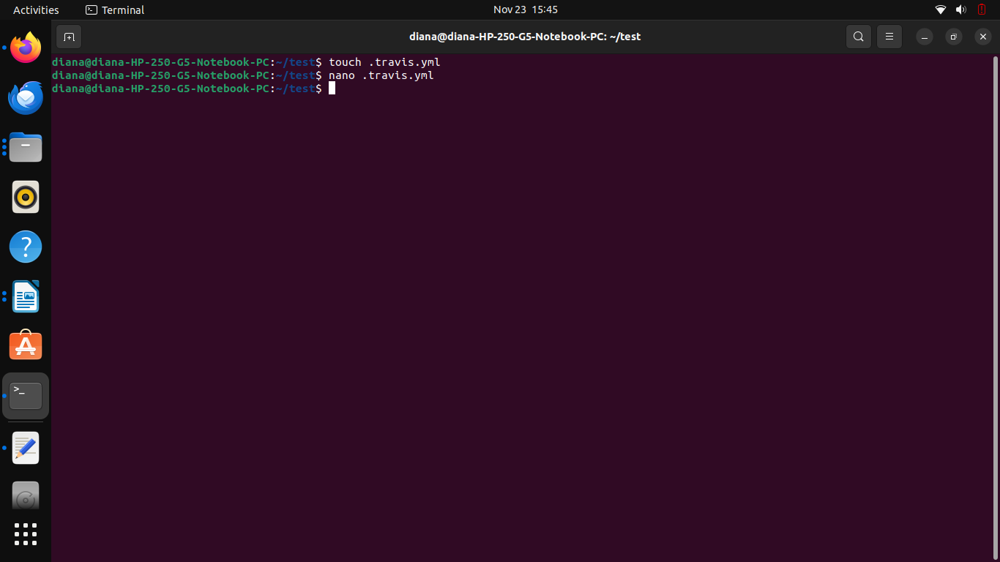
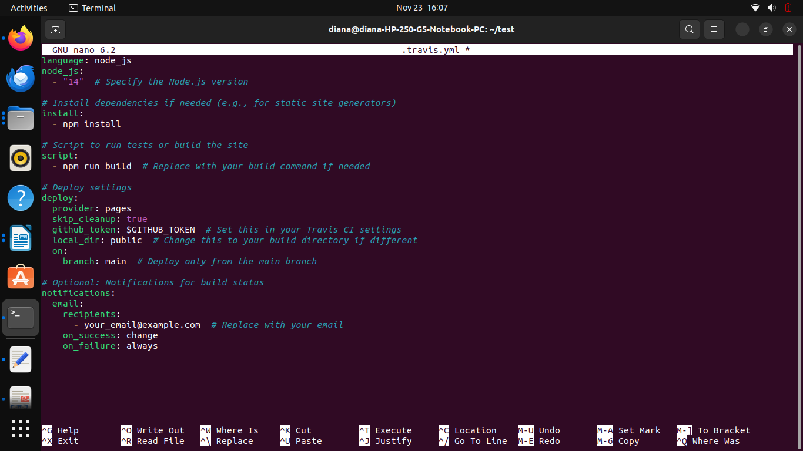

To install Travis CI on Ubuntu, it is important to clarify that Travis CI is primarily a cloud-based service that integrates with GitHub repositories. You don’t install Travis CI directly on your local machine or server, but you can set up a local environment for testing your .travis.yml configurations using a tool called Travis CLI.
1 Go to Travis CI.
2 Sign in with your GitHub account.

3 Authorize Travis CI to access your GitHub repositories.



1 Once logged in, go to your profile on Travis CI.

2 Find your repository in the list and toggle the switch to enable Travis CI for it.

1 Open your terminal and navigate to your project directory: cd /path/to/your/project
2 Create a file named .travis.yml: touch .travis.yml

3 Add the configuration for your project. Adjust the contents of the .travis.yml file based on your project’s requirements.

1 Stage the .travis.yml file: git add .travis.yml
2 Commit the changes: git commit -m "Add Travis CI configuration"
3 Push to your GitHub repository: git push origin master
1 Go to your Travis CI dashboard.
2 You should see your build triggered automatically after you pushed the changes.
3 Click on the build to see the logs and results.
1 Go to your Travis CI dashboard.
2 You should see your build triggered automatically after you pushed the changes.
3 Click on the build to see the logs and results.